前端和后端
我们来回顾一下 😌
- 上次了解了
- 什么是后端
- 什么又是前端？🤔
- 前端
- 负责发送请求(requests)
- 负责接收响应(response)
- 后端
- 负责接收请求(requests)
- 负责发送响应(response)
- 可是为什么要分出前后端呢？🤔
单层架构(1-tier architecture)

- 如果服务器和客户端都在一起
- 那就可以使用1层架构
- 自己发请求，自己接收响应
- 比如
- 查询本地硬盘上的数据库
- 访问本地的服务器
- 玩单机游戏
- 但是很多的服务往往不在本地
Client-Server
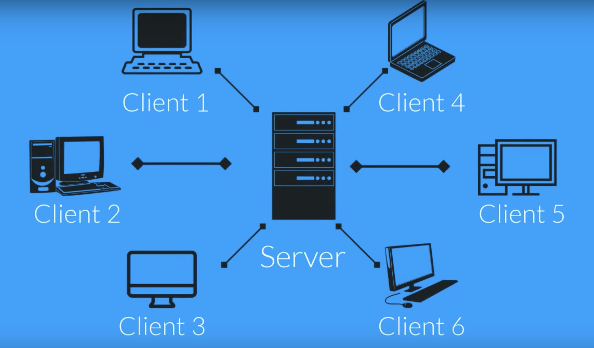
- 有好多客户端都要访问这个服务器
- 比如说moba类的5v5
- 或者要做这个保湿的工作
单层
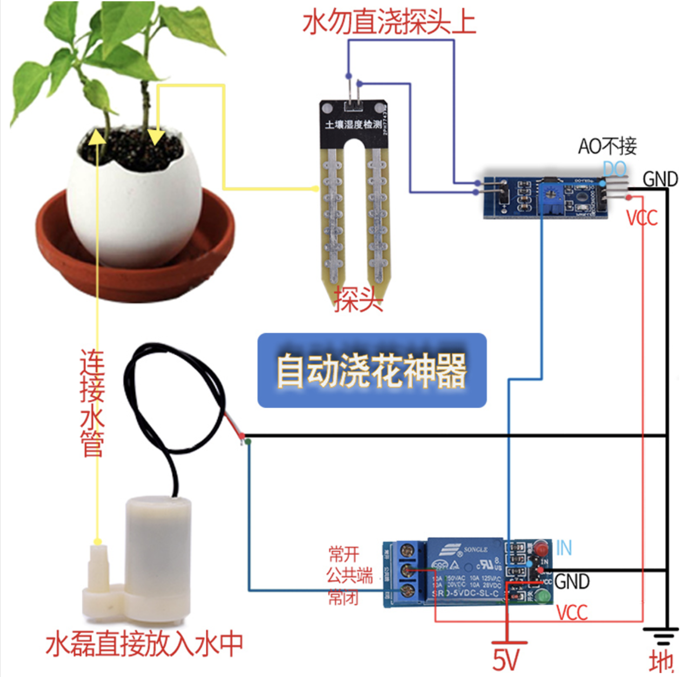
- 如果只有一个湿度传感器
- 控制一个水泵
- 都在一起
- 这个逻辑很简单
负反馈
- 离着火近了就烧伤
- 离着火远了就寒冷
- 咸了就喝水 淡了就加盐
- 饿了就吃 饱了就不吃
- 面多了加水 水多了加面
- 这是我们作为动物进行具体调整的本能
- 但是机器不会这个
控制器
- 蒸汽机如果压力过大
- 蒸汽锅炉就会爆炸
- 如果压力过小
- 又无法驱动设备
- 必须要一个合适的压力范围
- 驱动用功单位以合适的速度运行
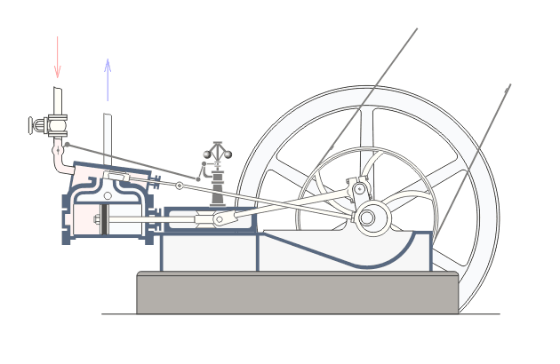
- 注意那两个小球
- 叫做离心调速器(Centrifugal Governors)
- [ˌsentrɪˈfjuːɡl] 离心的
- Governors 平衡控制器
- centrifugal feedback valve(离心反馈阀门)
- 是蒸汽机的主神经中枢
- 如果速度过快
- 小球向上推动就会打开阀门放气
- 使得速度降下来
- 速度慢下来之后
- 阀门关闭
- 小球向下关闭阀门
- 使得速度提升
动态均衡
- 控制论是很伟大的
- Cybernetics讲了个根本的事情
- 佛家的空
- 道家的无、阴阳之道
- 儒家的中庸
- 博弈论中的纳什均衡
- 历史的车轮滚滚向前
- 蒸汽机车脑门上都带一个铃铛
- 机械时代过渡到电器时代也一样需要governor
蒸汽朋克与蒸汽波
- 曾经先进的科技
- 如今看却有点复古
- 反倒成为向往的所在
浇花
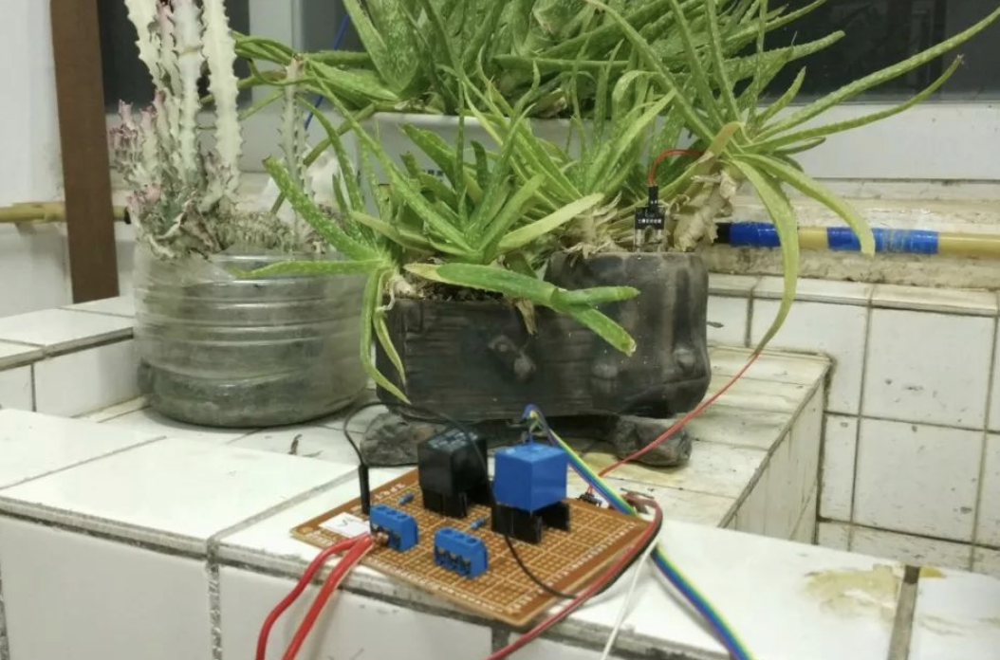
- 那这个就是1-tier架构
- 纯纯的模拟电路
- 光耦之前
- 都是没有数字化的电压状态描述的信息
- 不过如果规模化之后
- 一般都要控制很多传感器和水泵
保湿
- 每个大棚都有湿度传感器
- 而且位置是分散的
- 传回到数据会交给一个程序
- 程序进行判断
- 如果湿度不够就浇水
- 如果湿度够了就停止
- 不能旱的旱死涝旳涝死
- 具体哪个
- 滴灌设备浇水
- 浇多少水
- 都是由服务器决定的
- 这就是2-tier架构
Host
- 有人建主机(Host)
- 然后等待玩家加入
- 等待的玩家算是客(client)
- 客到了加入了主机建立的游戏
- 才能玩游戏
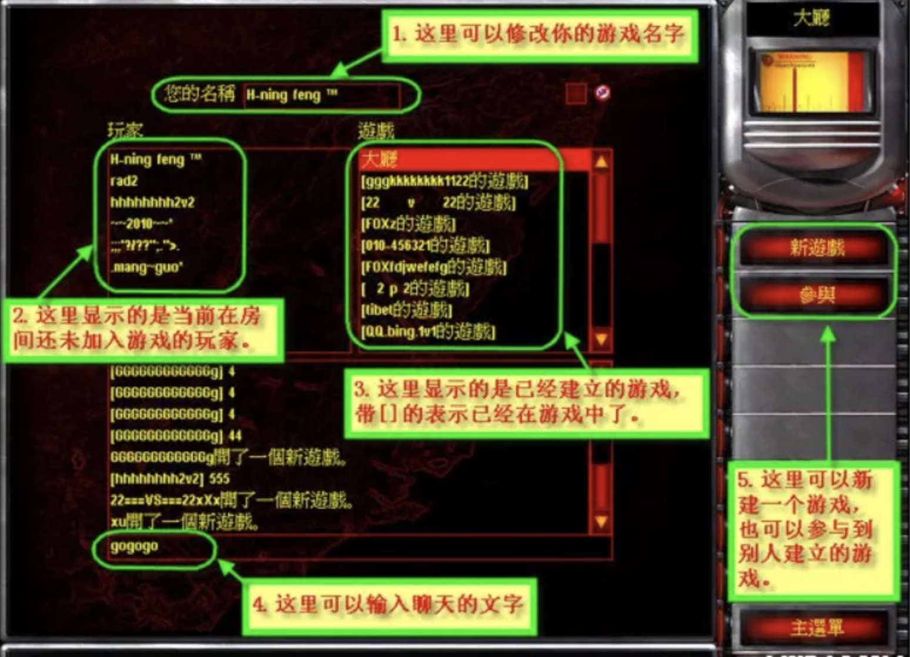
服务器
- 不可能都在同一个电脑上打游戏
- 这就需要服务器
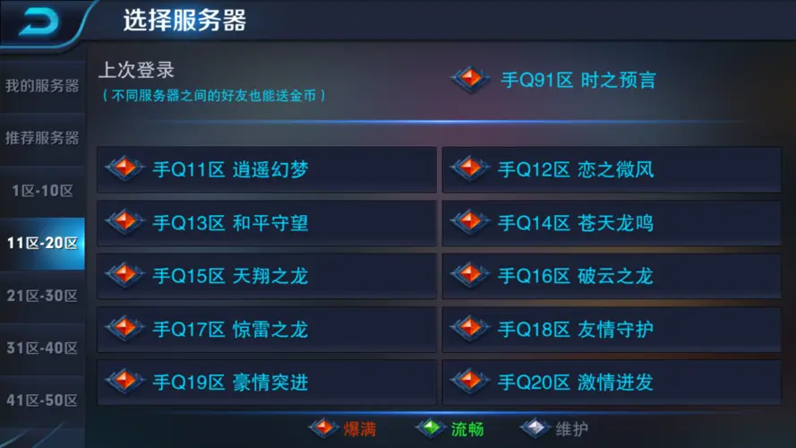
- 大家都连接到服务器
- 然后一起玩游戏
- 那前后端各管什么呢？
- 前端或者说客户端管什么？
前端
- 游戏的
- 图形界面
- 峡谷场景模型
- 英雄皮肤
- 动作数据
- 魔法效果
- 语音包
- 这些看得见、听得着的东西
- 更新客户端
- 就是从服务器上下载这些看得见、听得着的东西
- 就可以看到新的模型、动作和特效
- 那后端管什么呢？
后端
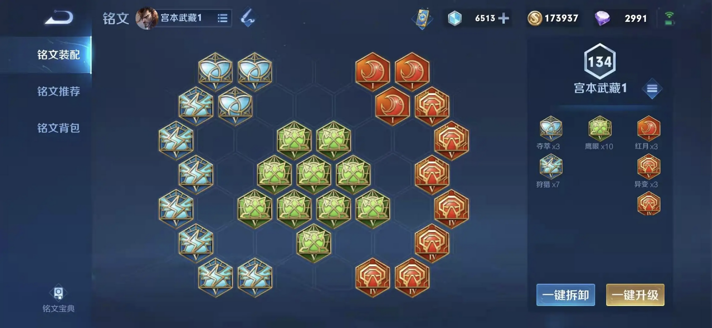
- 后端或者说服务端管什么
- 对玩家的奖惩
- 拉新促活的活动
- 对战双方的匹配
- 铭文的装备
- 技能的具体数值
卡顿
- 如果游戏过程中把网给断了
- 或者从wifi切换到4g的时间过程中
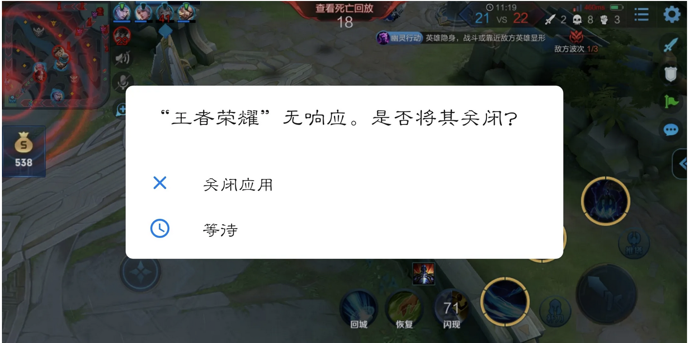
- 你的操作数据
- 比如放一个大
- 或者购买什么装备
- 由于网断了
- 所以无法上传到服务器
- 服务器也就无法更新你的数据
- 那九个人还在玩
- 可能你已经死了
- 或者根本连不上去了
更新
- 有各种各样的资源包
- 这些都要下载到手机前端(客户端)
- 更新的是手机存储器上的app
- 那什么东西放在后端呢？
核心数据
- 对于英雄的数值
- 都放在后端
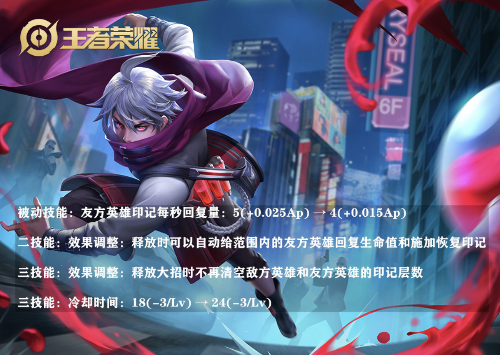
- 如果要对核心的程序结构更新
- 比如加入一个防沉迷系统
- 会发生什么呢？
- 只在前端变化或者后端调整都不行
- 要一起更新这个比较大的补丁(防沉迷)
- 会发生什么呢？
先测试
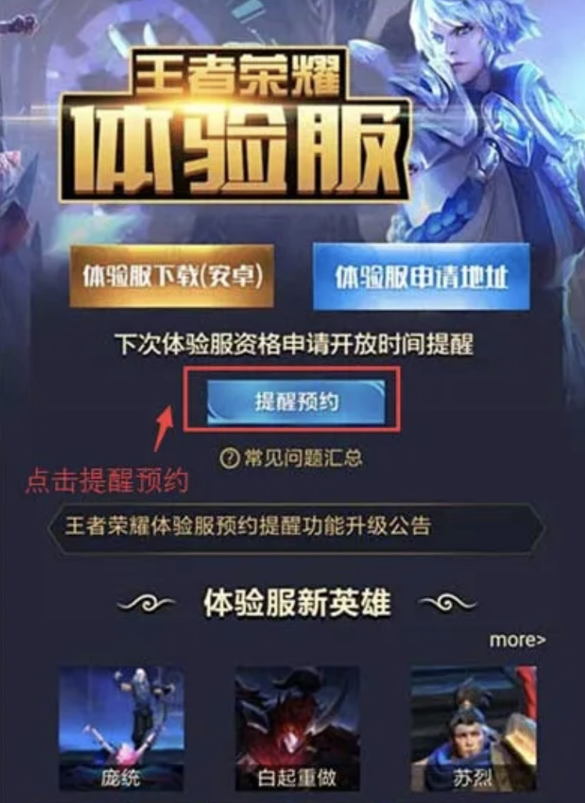
- 让部分玩家下载体验服对应的客户端
- 测试客户端连接到测试服务期
- 有新的内容和业务逻辑
- 玩的过程进行反馈
- 调整解决问题到最终发布版
- 等待最终发布
停服更新
- 把服务器停下来
- 用新代码编译后的结果替代旧代码
- 服务器就更新了
- 所有人进入客户端的时候
- 更新到新版客户端
- 这样服务器和客户端就都更新了
- 这种C/S架构是internet的基础
- 随着时间的推移
- 出现了一种新的客户端
浏览器
- 原来每种客户端都有自己的用途
- 游戏客户端
- 邮件客户端
- 视频app客户端
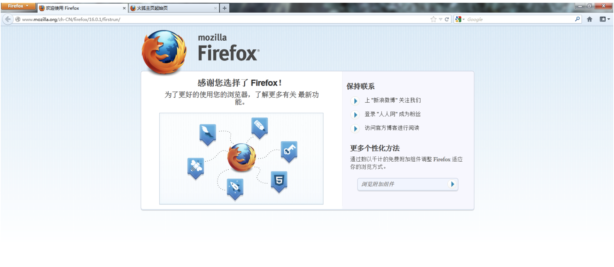
- 但是浏览器什么都能做
- 玩游戏
- 收发网页
- 看视频
-
甚至可以
- 微信网页版聊天
-
那这种浏览器有什么好处么？
VS
- 客户端能干的事情浏览器都能干
- 而且他还不用下载或者更新客户端
- 直接就能用起来
- 浏览器(browser)本质上也是一个客户端(client)
- 浏览器(browser)是一个网页查看客户端
- 也是2-tier架构
- 分成前后两端
划分
- 后端
- 优点是浏览器看不见，保密性好
- 数据敏感度、安全性高的放在后端安全
- 前端
- 优点是在浏览器上就直接计算
- 数据响应时间敏感度高的就在前端
- 比如一个浏览器的动画效果没有必要再去服务器走个来回
- UI交互相关度较高也都放到前端
- 还是那些看得见听得着的东西
- 这种划分也就造成了前后端工程师侧重的不同
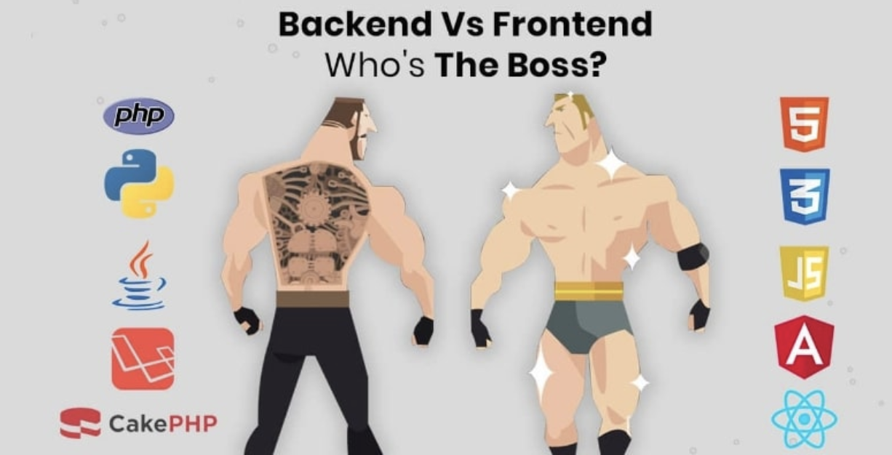
- 双方都有什么看家本事呢？
前端 vs 后端
- 前端工程师
- html、css、javascript
- 注重美术、设计
- 注重前端交互技术
- 考虑怎样能让用户觉得用起来更舒服
- 考虑界面布局、交互效果、页面加载速度
- 主要是偏向用户看得见的部分，客户端（pc、手机、pad）上浏览web
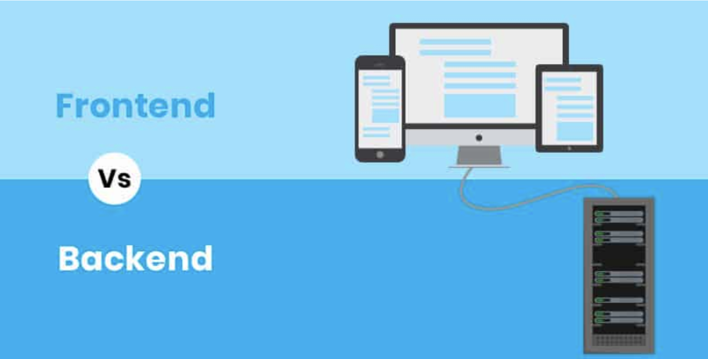
-
后端工程师
- java、python、go等后端语言
- 后端的应用服务器比如tomcat
- 通过语言访问后台数据库
- 管的是用户看不到的部分
- 想办法让服务速度更快
- 考虑业务逻辑
- 数据库表结构设计
- 服务器配置
- 负载均衡
- 数据的存储
- 跨平台API设计
-
可以从整体上分析么？
整体
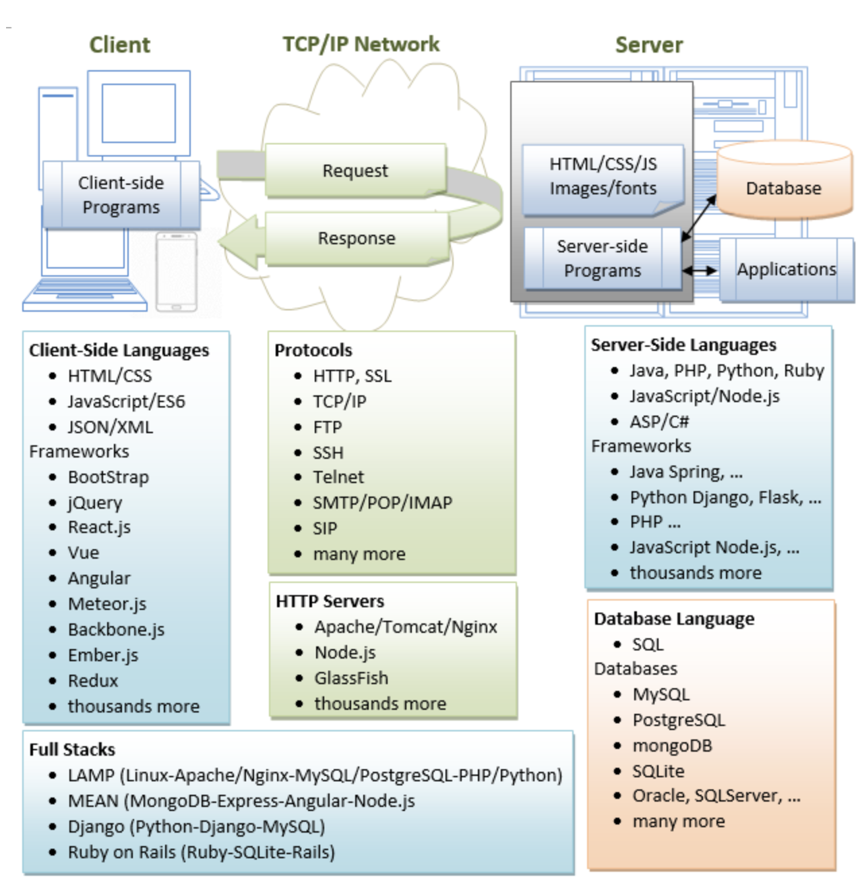
- 前后端有不同的解决方案
- 各自都很厉害
- 中间使用网络通信协议连接起来
回归
- 今天我们可以看到前后端技术如此不同
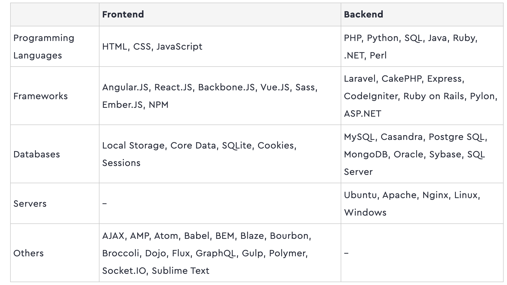
- 但是也不要忘了回到当初
- 我们把计算机使用网络连接了起来
- 人为地区分出服务器和客户端
- 乃至到今天的服务器和浏览器
- 一分为二很容易
- 难的是合二为一
思考
- 只有两端都了解
- 才能促进中间接口的进化
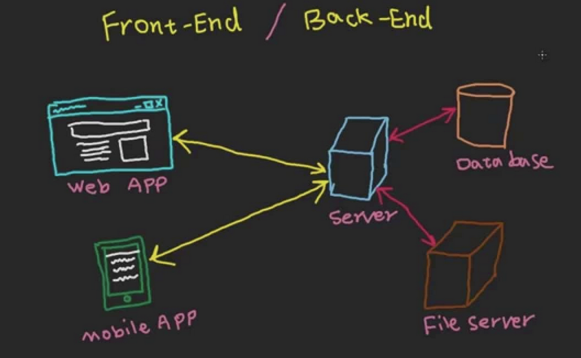
- 前端也可以计算、后端也可以计算
- 那究竟在哪端来算呢？
- 比如我想要计算
- 1到100的和
- 前后端分别会如何处理呢？
后端计算
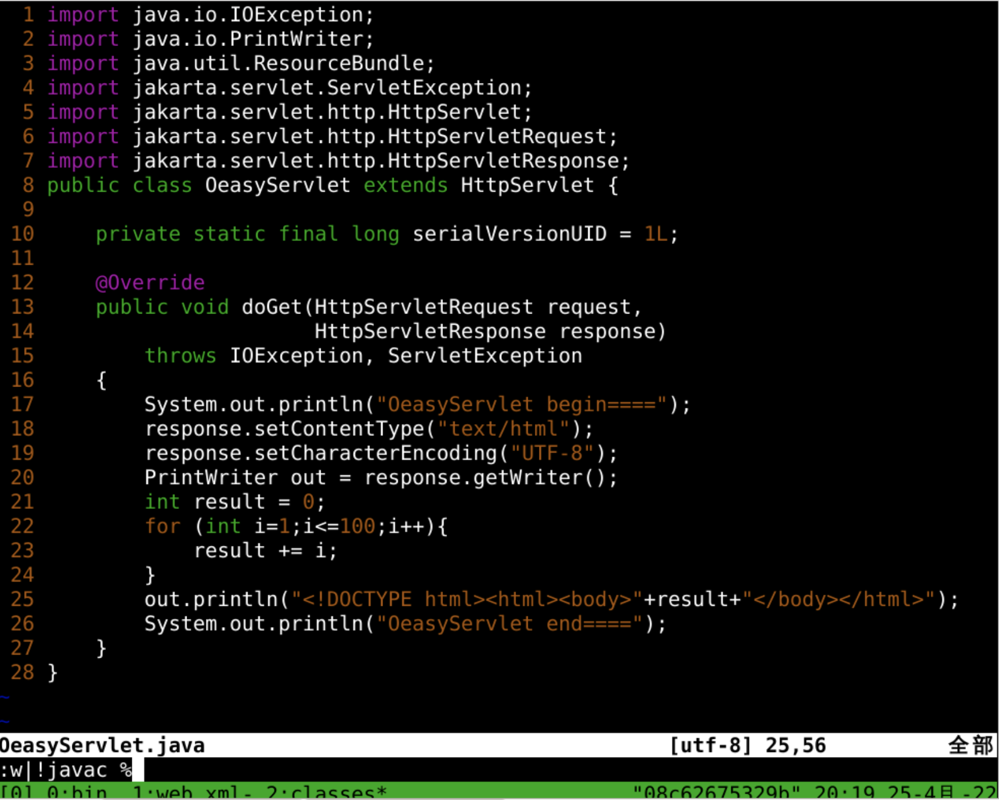
- 在后端从1加到100
发布
- 后端代码更新
- 我们需要重新编译
- 重启tomcat服务器
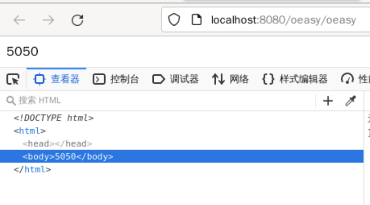
- 后端处理之后
- 前端浏览器只看到最终结果
- 不知道到底是怎么得到的结果
- 那前端呢？
前端计算
<html lang="zh">
<head>
<meta http-equiv="Content-Type" content="text/html; charset=utf-8"/>
<script type="text/javascript">
function init(){
var result = 0;
for(var i=1;i<=100;i++){
result += i;
}
document.body.innerHTML = result+"";
}
</script>
</head>
<body onload="init()">
</body>
</html>
- 写好了直接保存
- 不用编译
- 也不用重启服务器
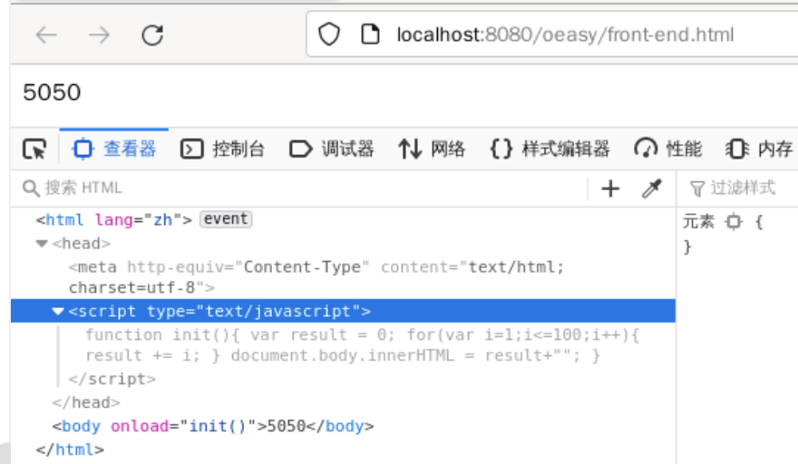
- 前端的运算过程都在本地浏览器
- 前端js代码里面
- 看得清清楚楚
- 写得明明白白
总结 🤨
- 这次了解了
- 什么是后端
- 什么又是前端？🤔
- 前端
- 负责发送请求(requests)
- 负责接收响应(response)
- 网页设计做图切片
- 管的是看得见听得着的部分
- 前端javascript代码
- 后端
- 负责接收请求(requests)
- 负责发送响应(response)
- java语言
- 应用服务器使用
- 后台数据库操作

- 可是究竟
- 什么是请求
- 什么又是响应呢？
- 下次再说！👋